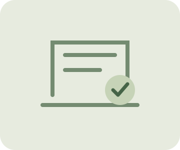

자산을 준비하고 있어요
검토 전
로컬 도구와 자산 목록을 불러오는 중입니다.
드래그로 회전 · 휠로 확대/축소 · 아래 버튼으로도 조작할 수 있어요.
표준형 GLB 기본 자세에서 정한 높이를 두 변형에 공통 고정합니다. 실제 바닥·접지 판정은 아닙니다.
임시 fixture 또는 검토 중 자산은 최종 품질 통과 수량에 포함하지 않습니다.
현재 자산과 측정 환경
삼각형·재질·텍스처·뼈대·클립은 읽은 GLB에서 계산합니다. 화면 크기 검사는 실제 모바일 기기 성능을 뜻하지 않습니다. 수치는 출시 기준이 아닙니다.